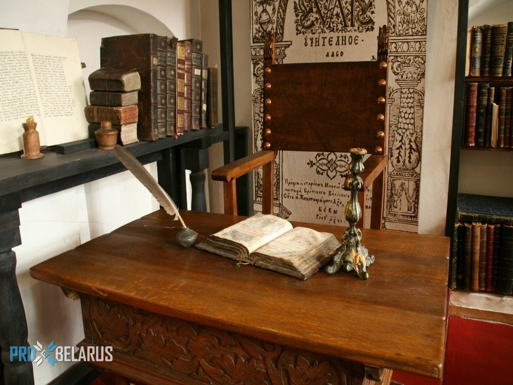

Музей открыл свои двери для посетителей 8 сентября 1990 года во время празднования 500-летия со дня рождения белорусского и восточнославянского первопечатника, полочанина Франциска Скорины. Музей посвящен книге во всех ее аспектах, начиная от первых рукописных свитков до современной книги, знакомит посетителей с историей создания письменности, письменных принадлежностей, книжной иллюстрации, полиграфии. Самую большую часть музейных экспонатов составляют книги: рукописные, старопечатные, а также современные издания. Кроме книг в музее представлена и другая продукция: журналы и газеты разных лет, открытки, листовки, календари, буклеты. Здесь же можно увидеть и те предметы и материалы, которые сопутствуют книге и письму, и среди них письменные приборы прошедших столетий, печатный станок, бумажный пресс, подсвечники, письменные принадлежности разных эпох и инструменты для письма, начиная от писала и гусиного пера до современных автоматических ручек. Для того, чтобы совершить путешествие во времени и представить себе нелегкий процесс создания рукописных книг, в музее воссоздана мастерская переписчика книг — скрипторий, где можно увидеть монаха-переписчика с гусиным пером в руках. А процесс создания первых печатных книг представлен в реконструированной типографии XVII–XVIII вв., где работают наборщик и печатник. Сотрудники музея заботятся о сохранении и донесении до слушателя родного слова и потому большая часть экскурсий здесь проводится на белорусском языке.
|  |
|